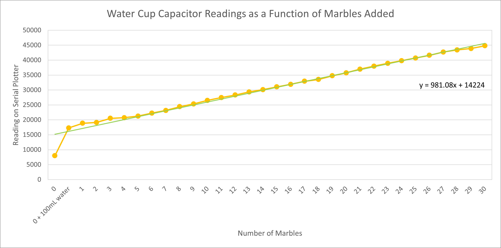
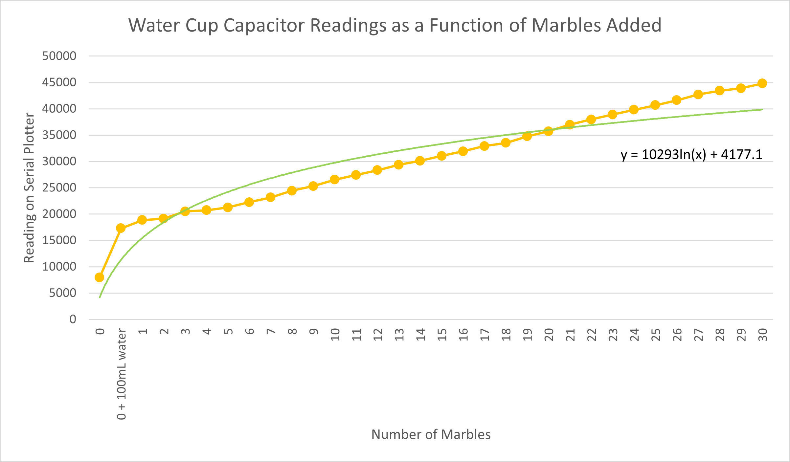

Week 6: Electronic Input Devices
Work in progress!
I will work on the assignment over spring break. This week has just been really difficult and I have not been feeling well. I'm not in a good headspace and I'm tired (not the kind of tired that sleep can fix, though). Sorry, and if I lose points because of this I understand.
This week, we were tasked with making a capacitive sensor to measure a physical quantity, using another sensor of our choosing, and calibrating both sensors.
Making and calibrating a capacitive sensor
For the first part of the assignment, I made a water cup capacitor that measures water displacement depending on the number of marbles added to the cup. The goal was to be able to estimate the number of marbles added by using the trend line of the graph from the callibration step.
Regarding the microcontroller and breadboard setup, I put two 1MOhm resistors between 3.3V and GND and used Robert Hart's program to measure transmit-receive signals across space between two copper foil squares. Here is the code, follwed by pictures of the microcontroller and breadboard:
// rx_tx02 Robert Hart Mar 2019.
// Program to use transmit-receive across space between two conductors
// One conductor attached to A1, one to A3
int read_high;
int read_low;
int diff;
long int sum;
int N_samples = 100; //Number of samples to take. Larger number slows it down, but reduces scatter.
int analog_pin = A3;
int tx_pin = A1;
void setup() {
pinMode(tx_pin,OUTPUT); //Pin A1 provides the voltage step
Serial.begin(115200);
}
void loop() {
sum = 0;
for (int i = 0; i < N_samples; i++){
digitalWrite(tx_pin,HIGH); //Step the voltage high on conductor 1.
read_high = analogRead(analog_pin); //Measure response of conductor 2.
delayMicroseconds(100); //Delay to reach steady state.
digitalWrite(tx_pin,LOW); //Step the voltage to zero on conductor 1.
read_low = analogRead(analog_pin); //Measure response of conductor 2.
diff = read_high - read_low; //Desired answer is the difference between high and low.
sum += diff; //Sums up N_samples of these measurements.
}
Serial.println(sum);
//delay(100);
}
I added approximately 100mL of tap water to the cup, which was enough that the water level in the cup was the same height as the bottom of the copper foil squares. The water level in the cup rose with every marble added such that the volume of water displaced was equal to the amount of water then present between the two foil squares. I compiled the readings from the serial plotter function into a table and generated two graphs, one with a logarithmic trendline and the other with a linear trendline.
An image of the cup capacitor with five marbles in it:
Here is what the serial plotter looked like every time I added a marble to the cup (in this case, the 30th marble):
And here are the table and graphs:
| Number of marbles | Reading on Serial Plotter |
|---|---|
| 0 | 7975 |
| 0 + 100mL water | 17280 |
| 1 | 18850 |
| 2 | 19120 |
| 3 | 20520 |
| 4 | 20720 |
| 5 | 21250 |
| 6 | 22260 |
| 7 | 23150 |
| 8 | 24420 |
| 9 | 25320 |
| 10 | 26520 |
| 11 | 27440 |
| 12 | 28320 |
| 13 | 29360 |
| 14 | 30120 |
| 15 | 31040 |
| 16 | 31900 |
| 17 | 32920 |
| 18 | 33500 |
| 19 | 34760 |
| 20 | 35720 |
| 21 | 36960 |
| 22 | 37960 |
| 23 | 38910 |
| 24 | 39800 |
| 25 | 40680 |
| 26 | 41600 |
| 27 | 42700 |
| 28 | 43410 |
| 29 | 43880 |
| 30 | 44800 |
Graph with linear trend line:
Graph with logarithmic trend line:
Interestingly, the linear trendline fits the data better than the logarithmic trendline. I initially thought that the the latter would better approximate the data than the former because the cup is not perfectly cylindrical and the water level would rise less with every added marble, but this effect turned out to be largely negligible.
I also experimented with taking marbles out of the cup. I wanted to see if the serial plotter values would decrease to the value I originally observed because that would demonstrate consistentcy in the reading. It would be important for estimating the number of marbles in the cup at any given time as well. I found that it took significantly longer for the serial plotter readings to stabilize when a marble was taken out (about 5-10 minutes) as compared to when a marble was added (about 1-2 minutes), and that the capacitor system was very sensistive to any perturbations in the environment, for example if I moved my laptop or sat closer to the cup. That said, when I took 5 of 30 marbles out, the capacitor re-stabilized at 41400, which was closer to the value for marble 26 (41600) than the value for marble 25 (40680). Then, when I added the five marbles back for a total of 30 marbles in the cup, the capacitor restabilized at 45420 instead of 44800 (expected value). Plugging 45420 into the linear model, we get an estimated 31.8 marbles. I imagine this discrepancy is because the cup shifted away from me a little, but nonetheless the values were approximately correct such that I could estimate the number of marbles in the cup (within 2 marbles).
Using and calibrating a magnetic field sensor
For the second part of the assignment, I used and calibrated a magnetic field sensor. I had a lot of difficulty callibrating this sensor and spent hours trying to get consistent readings. I think that part of the reason it was so difficult was that I was using a magnet fragment with an irregular shape. It also took me an embarrassingly long time to figure out that the readings were affected by which side (or pole) of the magnet was facing the sensor, which in hindsight should have been obvious to me from the start. My numbers were different from the values reported in the example linked on the website and I spent a lot of time trying to figure out why. Potential reasons I was able to think of include strength of the magnet and environmental conditions (for example, temperature). I eventually added a 1 MOhm resistor on my breadboard to stabilize the readings from serial monitor as well.
Here are pictures of the magnet and the microcontroller-breadboard setup:
I used a slightly modified version of the AnalogReadSerial example provided in the arduino software for the code. Two modifications I made were changing the serial communication speed from 9600 to 115200 baud and increasing the delay from 1 to 10 milliseconds (for stability). Here is the code:
// the setup routine runs once when you press reset:
void setup() {
// initialize serial communication at 115200 bits per second:
Serial.begin(115200);
}
// the loop routine runs over and over again forever:
void loop() {
// read the input on analog pin 0:
int sensorValue = analogRead(A0);
// print out the value you read:
Serial.println(sensorValue);
delay(10); // delay in between reads for stability
}
Then, to calibrate the hall sensor, I used 0.5mm spacers. I compiled the readings from the serial monitor function into a table and generated a graph based on the data. Both are shown below.
| Number of Spacers | Distance (mm) | Reading on Serial Monitor |
|---|---|---|
| 0 | 0 | 41 |
| 1 | 0.5 | 41 |
| 2 | 1 | 41 |
| 3 | 1.5 | 41 |
| 4 | 2 | 41 |
| 5 | 2.5 | 41 |
| 6 | 3 | 41 |
| 7 | 3.5 | 41 |
| 8 | 4 | 41 |
| 9 | 4.5 | 41 |
| 10 | 5 | 42 |
| 11 | 5.5 | 45 |
| 12 | 6 | 53 |
| 13 | 6.5 | 106 |
| 14 | 7 | 143 |
| 15 | 7.5 | 182 |
| 16 | 8 | 193 |
| 17 | 8.5 | 203 |
| 18 | 9 | 219 |
| 19 | 9.5 | 232 |
| 20 | 10 | 240 |
| 21 | 10.5 | 245 |
| 22 | 11 | 256 |
| 23 | 11.5 | 261 |
| 24 | 12 | 266 |
| 25 | 12.5 | 269 |
| 26 | 13 | 276 |
| 27 | 13.5 | 280 |
| 28 | 14 | 286 |
| 29 | 14.5 | 290 |
| 30 | 15 | 292 |
Graph:
Graph with logarithmic trend line:
Based on the table and graph, the sensor is sensitive for distances from 5mm up to at least 15mm. Interestingly, the signal does not change from 0 to 4.5mm (it stays the same at 41). Excluding the 0 to 4.5mm range, we can generate a fairly accurate logarithmic trendline (shown in bottom-most of the two graphs directly above). One thing to note is that the baseline signal (measured without a magnet in the immediate vicinity of the hall sensor) is 344. The signal values in the graph increase with distance from the hall sensor, from 41 to 292, and will continue to increase up to 344. Had I flipped the magnet, the values would instead decrease starting from 627 (instead of 41) to 344.
And that is all for this week. Thank you!
Powered by w3.css
Mohammed Mutaher 2022